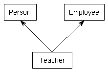
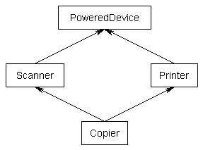

到目前为止，我们介绍的所有继承示例都是单继承——也就是说，每个继承的类都有且只有一个父类。不过，C++其实还支持多重继承。多重继承使得派生类可以从多个父类继承成员。
假设我们想写一个程序来记录一群老师的信息。老师”是一个“人。然而，教师也是雇员(如果为自己工作，他们就是自己的雇主)。多重继承可用于创建从Person和Employee继承属性的Teacher类。要使用多重继承，只需一次指定每个基类(就像单继承一样)，用逗号分隔。

#include <string>
#include <string_view>
class Person
{
private:
std::string m_name;
int m_age{};
public:
Person(std::string_view name, int age)
: m_name{ name }, m_age{ age }
{
}
const std::string& getName() const { return m_name; }
int getAge() const { return m_age; }
};
class Employee
{
private:
std::string m_employer;
double m_wage{};
public:
Employee(std::string_view employer, double wage)
: m_employer{ employer }, m_wage{ wage }
{
}
const std::string& getEmployer() const { return m_employer; }
double getWage() const { return m_wage; }
};
// Teacher publicly inherits Person and Employee
class Teacher : public Person, public Employee
{
private:
int m_teachesGrade{};
public:
Teacher(std::string_view name, int age, std::string_view employer, double wage, int teachesGrade)
: Person{ name, age }, Employee{ employer, wage }, m_teachesGrade{ teachesGrade }
{
}
};
int main()
{
Teacher t{ "Mary", 45, "Boo", 14.3, 8 };
return 0;
}Mixins#
mixin (也拼作 “mix-in”) 是一个小的类，它可以被类继承以便为其添加一些属性。它的名字mixin（混入）说明，它的用途是被添加到其他类中，而不是单独被实例化。
在下面的例子中，Box 和 Label 类都是 mixin，我们可以通过继承它们来创建新的Button class.
// h/t to reader Waldo for this example
#include <string>
struct Point2D
{
int x;
int y;
};
class Box // mixin Box class
{
public:
void setTopLeft(Point2D point) { m_topLeft = point; }
void setBottomRight(Point2D point) { m_bottomRight = point; }
private:
Point2D m_topLeft{};
Point2D m_bottomRight{};
};
class Label // mixin Label class
{
public:
void setText(const std::string_view str) { m_text = str; }
void setFontSize(int fontSize) { m_fontSize = fontSize; }
private:
std::string m_text{};
int m_fontSize{};
};
class Button : public Box, public Label {};
int main()
{
Button button{};
button.Box::setTopLeft({ 1, 1 });
button.Box::setBottomRight({ 10, 10 });
button.Label::setText("Username: ");
button.Label::setFontSize(6);
}COPY
多重继承带来的问题#
虽然多重继承似乎是单继承的简单扩展，但多重继承引入了许多问题，这些问题可能显著增加程序的复杂性，并使其成为维护的噩梦。让我们来看看一些具体情况。
首先，当多个基类包含具有相同名称的函数时，可能会产生歧义。例如:
#include <iostream>
class USBDevice
{
private:
long m_id {};
public:
USBDevice(long id)
: m_id { id }
{
}
long getID() const { return m_id; }
};
class NetworkDevice
{
private:
long m_id {};
public:
NetworkDevice(long id)
: m_id { id }
{
}
long getID() const { return m_id; }
};
class WirelessAdapter: public USBDevice, public NetworkDevice
{
public:
WirelessAdapter(long usbId, long networkId)
: USBDevice { usbId }, NetworkDevice { networkId }
{
}
};
int main()
{
WirelessAdapter c54G { 5442, 181742 };
std::cout << c54G.getID(); // Which getID() do we call?
return 0;
}当 c54G.getID() 编译的时候，编译器会查看 WirelessAdapter 中是否有名为 getID()的函数。没有。所以编译器会查看父类中是否具有名为 getID() 的函数。看到问题了吗？问题是c54G实际上包含两个getID()函数：一个继承自USBDevice，另一个继承自NetworkDevice。因此，这个函数调用是模糊的，如果试图编译它，你将收到一个编译器错误。
int main()
{
WirelessAdapter c54G { 5442, 181742 };
std::cout << c54G.USBDevice::getID();
return 0;
}虽然上述解决方法非常简单，但是当您的类继承4个或6个基类(这些基类本身继承其他类)时，你可以看到事情会变得多么复杂。随着继承的类越来越多，命名冲突的可能性呈指数级增长，需要显式地解决每一个命名冲突。
其次，菱形继承问题更加严重，笔者将其称为”菱形末日“。当一个类从两个类继承，而这两个类又继承自一个共同的类时，就会出现菱形继承问题。其继承层次结构看上去像一个菱形。
例如，考虑下面的代码：
class PoweredDevice
{
};
class Scanner: public PoweredDevice
{
};
class Printer: public PoweredDevice
{
};
class Copier: public Scanner, public Printer
{
};
扫描仪和打印机都是电器，因此它们继承 PoweredDevice。然而，复印机结合了扫描仪和打印机的功能。
在这种情况下会出现许多问题：例如，复印机中是否应该有两份PoweredDevice，以及如何解决某些类型的模糊引用。虽然这些问题中的大多数都可以通过显式作用域来解决，但为了处理增加的复杂性而向类添加的维护开销可能会导致开发时间急剧增加。我们将在下一章中讨论更多解决菱形继承问题的方法(18.8 — Virtual base classes)。
多重继承是否弊大于利？#
事实证明，可以使用多重继承解决的大多数问题也可以使用单一继承解决。许多面向对象语言(如。Smalltalk, PHP)甚至不支持多重继承。许多相对现代的语言，如Java和c#，将类限制为普通类的单一继承，但允许接口类的多重继承(我们将在后面讨论)。在这些语言中禁止多重继承的背后的驱动思想是，它只会使语言过于复杂，最终导致的问题比解决的问题更多。
许多作者和有经验的程序员认为，应该不惜一切代价避免C++中的多重继承，因为它会带来许多潜在的问题。笔者并不同意这种观点，因为在某些时候和情况下，多重继承是进行的最佳方式。然而，多重继承应该非常明智地使用。
有趣的是，你已经在使用基于多重继承编写的类而不自知，std:iostream库对象std::cin和std::cout都是使用多重继承实现的！